Drift alerts
The 4imprint customer card repeats MOTUL's quote, so Amy Gustafson of 4imprint is shown saying another customer's words
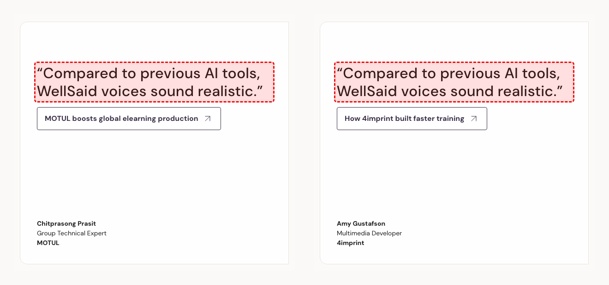
In the "Trusted by leading brands" row, the MOTUL card and the 4imprint card show the same quote, "Compared to previous AI tools, WellSaid voices sound realistic." On the 4imprint card it's credited to Amy Gustafson, but her quote in the 4imprint case study (www.wellsaid.io/…/how-4imprint-built-a-faster-training-with-wellsaid) is "WellSaid is a complete game changer…", and that's how the Corporate communications page quotes her too.
The rewritten Marketing page promises unlimited downloads with no usage caps, but every plan now caps downloaded minutes (and Starter caps projects)
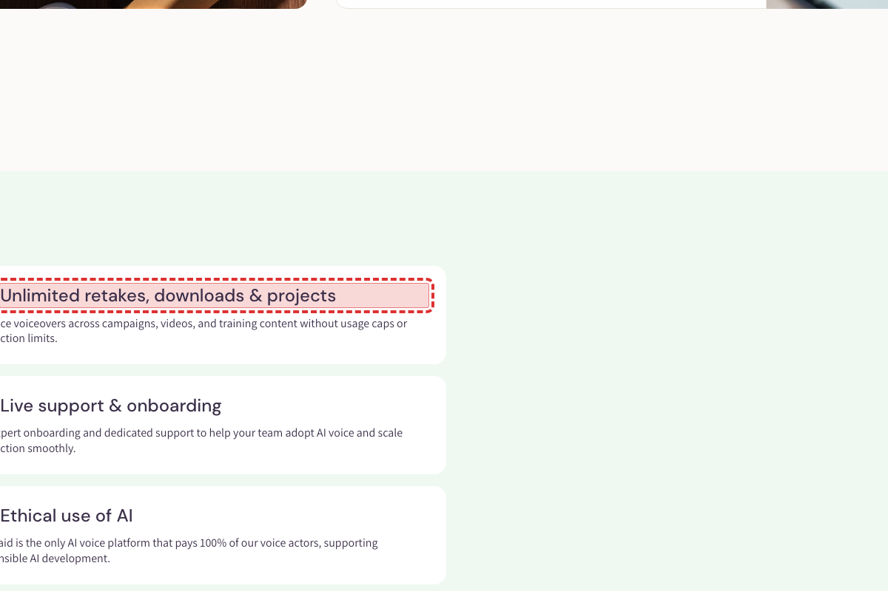
Since the June 2026 plan changes, usage is measured in downloaded minutes: every plan, Enterprise included, comes with a set number of download minutes (see https://www.wellsaid.io/ai-voice-pricing), and Starter is limited to 10 projects. The Help Center article help.wellsaid.io/…/52476451642003-Understanding-June-2026-Pricing-and-Plan-Changes says "Your plan includes a set number of audio minutes you can download each month." This week's rewrite of the Marketing page also brought back the old "retakes" wording, which the rest of the site now calls "generation". The page also says "without usage caps or production limits."
The SSO article's OpenID Connect section now lists the SAML settings by mistake — the OIDC values IT needs are gone
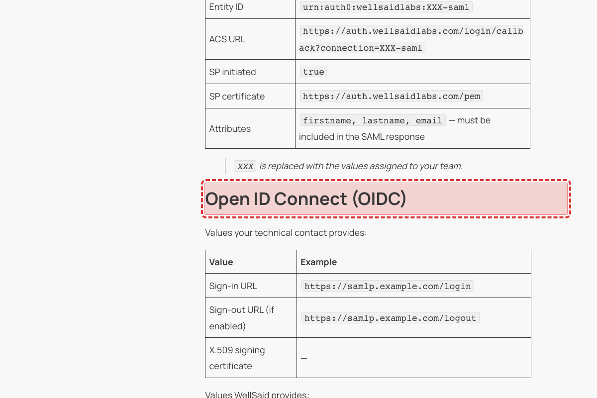
The "Open ID Connect (OIDC)" section is now a word-for-word copy of the SAML section directly above it: same sign-in URL example (https://samlp.example.com/login), same X.509 signing certificate row, same Entity ID (urn:auth0:wellsaidlabs:XXX-saml), same ACS URL ending in -saml, and the same line "firstname, lastname, email — must be included in the SAML response." An Enterprise IT team setting up OIDC has nothing correct to work from, and every value on the page points them at a SAML connection instead. The four OIDC-specific values (Issuer URL, Client ID, Redirect URL, Initiative login URL) were published on this page as recently as the July 26 scan and disappeared in the July 31 rewrite.
The Release Notes link to the Studio announcement no longer opens — the article it points to was taken down during the Help Center rewrite
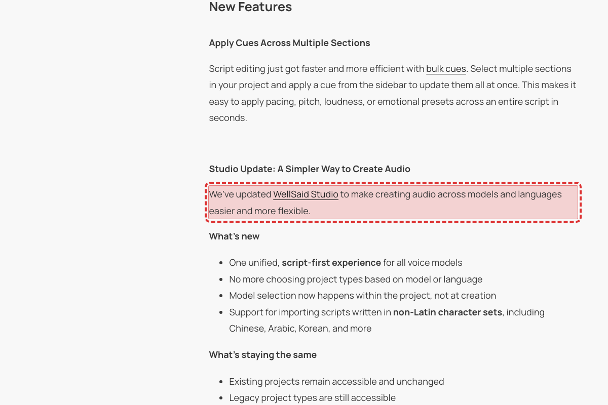
The "Studio Update: A Simpler Way to Create Audio" entry links the words "WellSaid Studio" to https://help.wellsaid.io/hc/en-us/articles/48785974467731. That article, "Introducing the New WellSaid Studio", is still absent from the Help Center; requesting it returns "RecordNotFound — Not found", while a live article requested the same way returns normally. Nine articles were removed from the Help Center in the Aug 5–7 rewrite, and this is the one that still has an inbound link from a page customers use to catch up on what changed.
The July 30 lock-out date has passed, but both migration articles still describe it as something that might happen
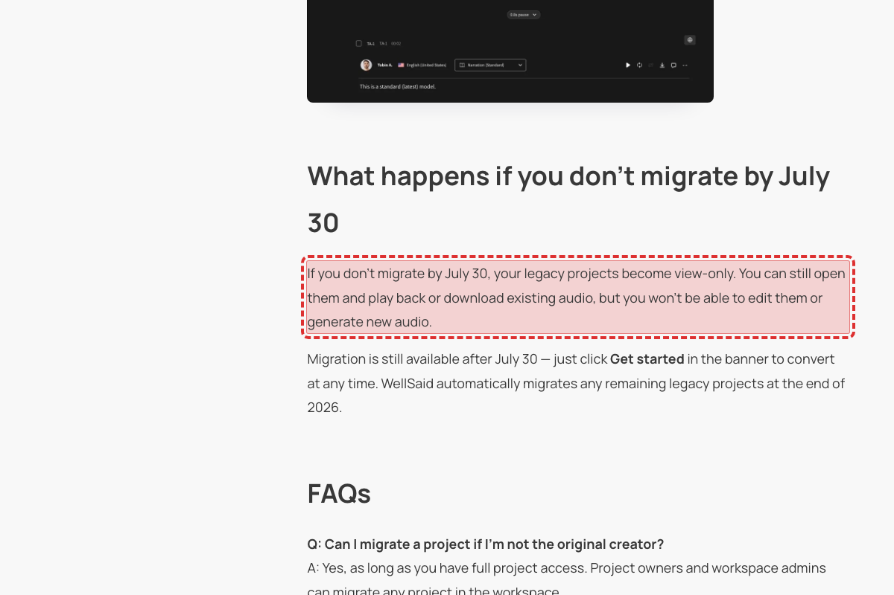
The July 30, 2026 transition date has passed. Both articles still read as advance notice: this one asks "What happens if you don't migrate by July 30," and Legacy Studio Migration FAQs says "You can keep editing and rendering in legacy projects normally up until July 30" and "If a project does become view-only on July 30." A customer opening a locked project today can't tell from either article whether the lock is expected or a fault. This is the same pattern as the existing finding on the June 1 migration launch article (51253958068755), but a different date on two different pages.
The admin onboarding guide still says the heart icon adds a voice to Team Voices — it's the bookmark icon, and the heart saves to personal Favorites instead
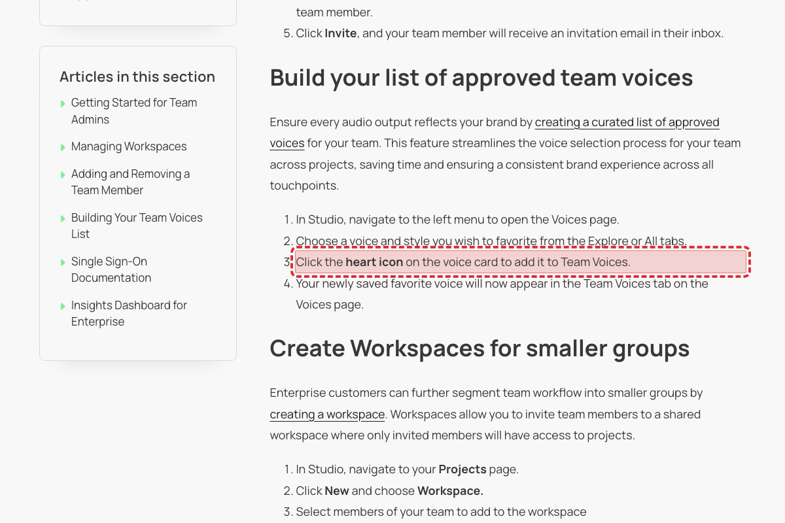
Building Your Team Voices List, updated on August 7, says "Click the bookmark icon on the voice card to add it to Team Voices" in both of its paths, and Favoriting a Voice spells out the difference: "Click the heart icon on the voice card to add it to Favorites" followed by "Note: Each voice card also has a bookmark icon next to the heart. That one adds the voice to Team Voices, a shared list for your team — it's separate from your personal Favorites." A new admin following this onboarding guide clicks the heart, and the voice lands in their own Favorites rather than the shared team list they were setting up. This page also still says "Choose a voice and style you wish to favorite from the Explore or All tabs" — the All tab was dropped from both of the rewritten voice articles.
Customers running low on minutes are told add-on packs are still coming and to contact Support — but add-ons shipped in July and can be bought self-serve
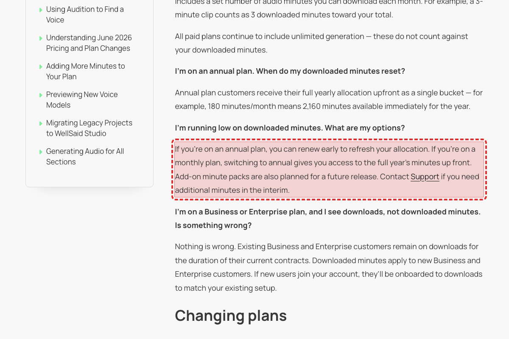
This article was last updated on September 8 and still answers "I'm running low on downloaded minutes" with "Add-on minute packs are also planned for a future release. Contact Support if you need additional minutes in the interim." Add-ons have been live for a month: the July 2026 Release Notes entry reads "Add-ons let you add extra minutes to your current plan – active the moment you buy", the article Adding More Minutes to Your Plan walks through buying one from Account Settings, Understanding Your Download Limit already points readers there, and every plan card on the pricing page now says "Extra minutes available". Customers who hit their limit are being sent to Support for something they can buy themselves in three clicks.
Legacy-migration preview article still uses future tense for the June 1, 2026 migration that has already gone live, and promises a guide "in June" that is already published
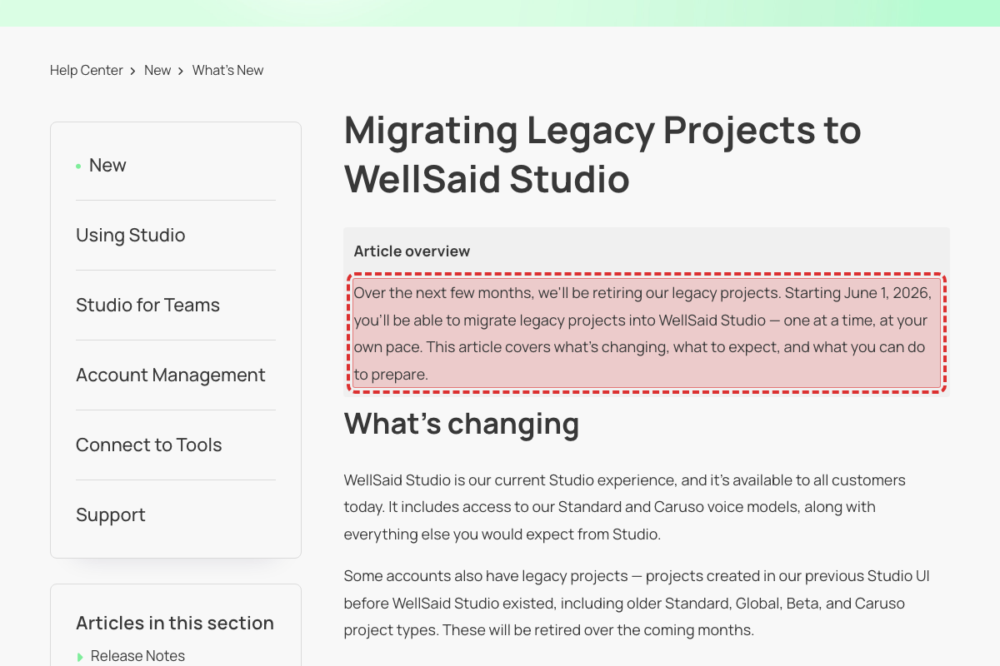
Article 51253958068755 (last updated 2026-09-08) still reads 'Starting June 1, 2026, you'll be able to migrate legacy projects', 'Migration is not automatic. Starting in June, you'll be able to migrate projects one at a time', and 'We'll be sharing a complete migration guide in June.' The stated date has already passed. Migration is already live: the companion guide 51751205121299 (published 2026-05-15) uses present tense ('you can migrate your legacy projects') and the dated timeline table lists 'June 1, 2026 — Migration opens.' Readers are told migration is a future capability and that a complete guide is still forthcoming, when both already exist.
Security page commits to WCAG 2.1 accessibility compliance "by 2025" — a deadline that has already passed
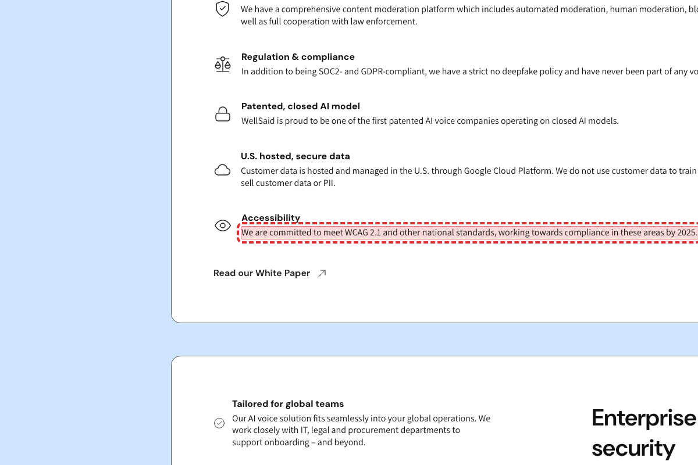
This page (https://www.wellsaid.io/features/features-security; the prior /features/security page was removed). Its Accessibility section reads 'We are committed to meet WCAG 2.1 and other national standards, working towards compliance in these areas by 2025.' The stated date has already passed. The rest of the section is forward-looking ('working towards'), so the page implies the WCAG 2.1 goal is still in progress past its own deadline. Not present in the carried-forward finding set.
The new free-plan landing page lists commercial rights as part of the free tier — the pricing page says the free tier has none
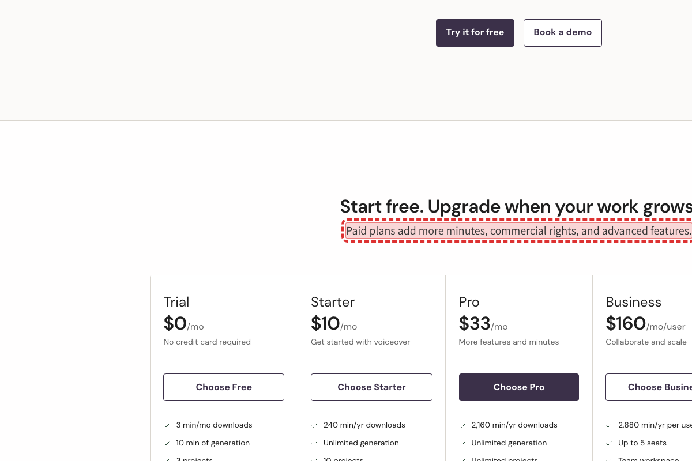
This page went live this week. The sentence above the plan comparison says "Paid plans add more minutes, commercial rights, and advanced features" — but the comparison directly below lists the free tier as "Trial $0/mo, No credit card required, 3 min/mo downloads, 10 min of generation, 3 projects, Commercial rights, Caption files". The pricing page describes the same tier as "3 download minutes per month (no commercial rights)". Every other row on the free column matches the pricing page (3 projects, 10 minutes of generation), so commercial rights is the one line out of step. Someone signing up for the free plan from this page could reasonably believe they can publish the audio commercially.
The size of the voice library is still advertised three ways across the site (120+, 240+ and 280+)
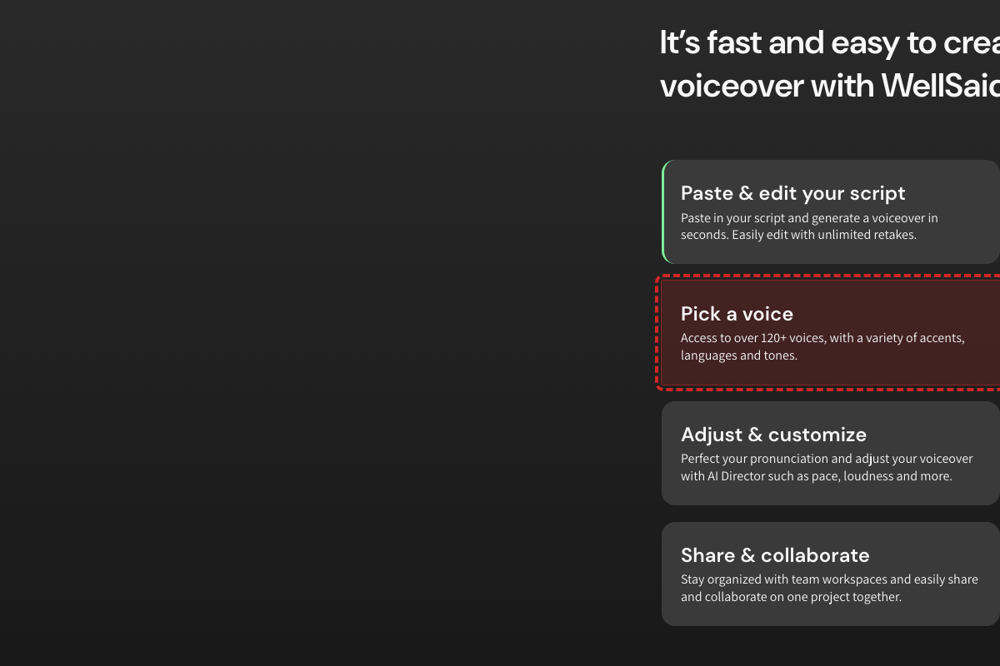
The Advertising page says "Access to over 120+ voices", /features/ai-voices (https://www.wellsaid.io/features/ai-voices) says 240+ twice, and the homepage, the Marketing page and every use-case page say 280+. Two blog posts still say "more than 120". The Marketing page was fixed this week and now says 280+ in every place.
The August release note calls the button “Generate All” — the how-to article it points to says the button is called “Generate”
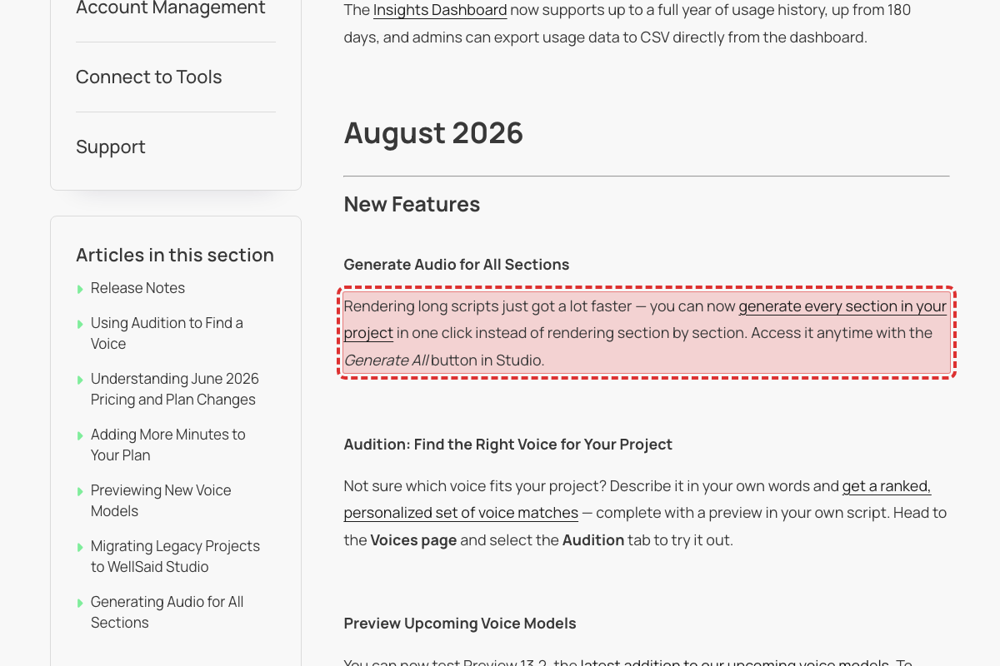
The August 2026 release note says "Access it anytime with the Generate All button in Studio." The article it announces, Generating Audio for All Sections, calls the same control Generate every time it names it: "Click on Generate in the top-right corner of the Studio", "the counter next to the Generate button counts down as each section finishes", and "If the counter still shows sections left, click Generate again to retry them." That article's wording is unchanged this week, so the two names still disagree. Someone who reads the release note and then goes looking for a Generate All button won't find one under that name.
Two articles rewritten this week name the wrong plan: Adobe Express is sold from Pro up, not Starter, and Collaborator seats are listed on Business as well as Enterprise
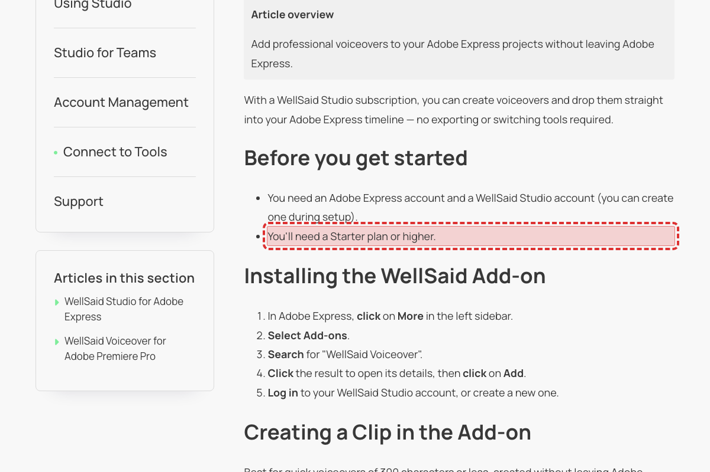
Both articles were rewritten on 2026-08-05/07 and both added a plan requirement that the pricing page contradicts. This article now opens with "You'll need a Starter plan or higher", but on wellsaid.io/ai-voice-pricing the Starter card lists no Adobe integration at all, the Pro card lists "Adobe Express integration", and the comparison table's Adobe integrations row reads "Adobe Express integration | Adobe Premiere Pro & Express integrations | Adobe Premiere Pro & Express integrations" across Pro, Business and Enterprise only. The new /free-ai-voice-generator page agrees, showing Adobe Express integration on Pro. Separately, Collaborator Role now leads with "Collaborator licenses are available as an add-on to Enterprise subscriptions", while the pricing page's Business card reads "Everything in Pro, plus: Purchase up to 5 seats, Team workspace, Collaborator seats, Live chat support". A Starter subscriber installs the Adobe add-on and finds it unavailable; a Business customer is told to buy Enterprise for something their plan already lists.
The new intro promises every voice is tagged with a speaking style, but more than half the list is tagged "(Partner)" — a voice model, not a style
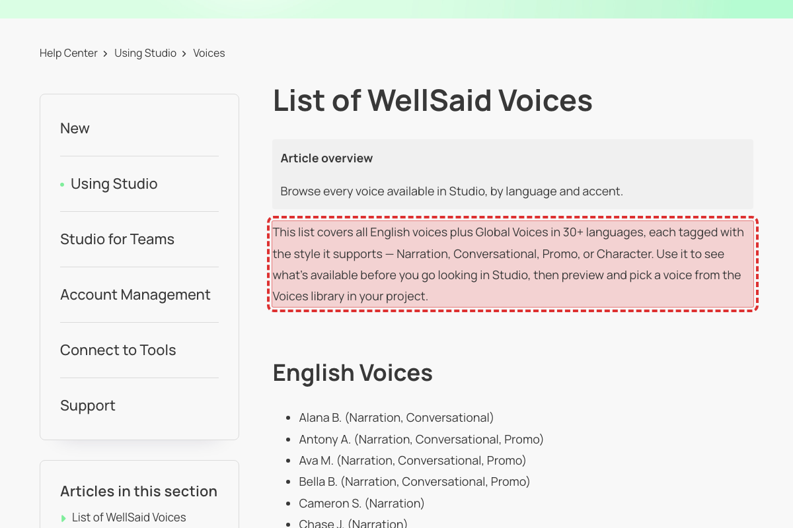
The intro paragraph added to this article in its August 7 update says the list covers voices "each tagged with the style it supports — Narration, Conversational, Promo, or Character". Of the 205 voices listed, 109 are tagged "(Partner)" instead — every Arabic, Chinese, Czech, Danish, Dutch, Italian, Japanese, Korean, Persian, Polish, Portuguese, Swedish and Turkish voice, plus most Spanish, French and German ones. Partner is a voice model, not a style: Creating Audio at Different Sample Rates says "Standard and Partner voices always render at 24 kHz", and Exploring Languages, Accents, and Styles says "Voices are organized into four speaking styles" with no Partner among them. Someone looking for a Conversational Spanish voice can't tell from this list which Spanish voices offer one.
The Emotional Presets FAQ answers a different question than the one it asks — and reverses its earlier answer without saying so
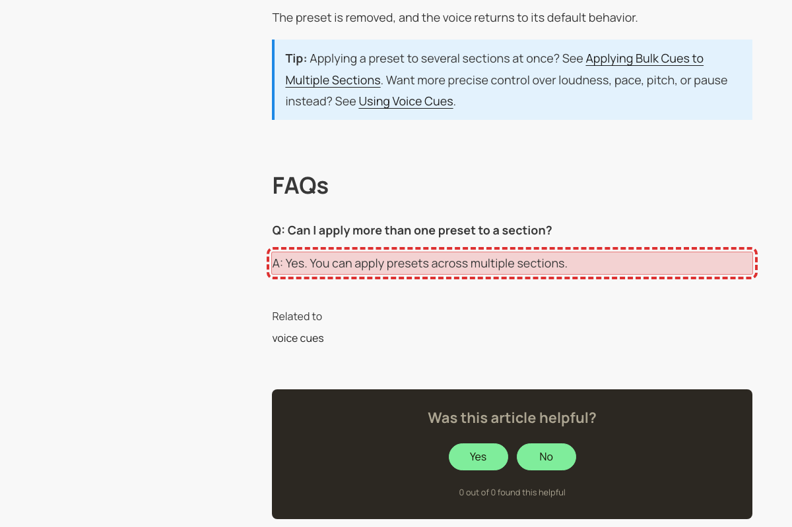
The question is "Can I apply more than one preset to a section?" but the answer talks about applying presets across multiple sections — a different thing. Read literally, it also contradicts the rest of the page: the Removing a preset steps describe a single Reset icon that returns the voice to its default, which only makes sense with one preset per section. Until the July 31 rewrite this FAQ answered "No. Only one Emotional Preset can be active per section at a time. Applying a new preset replaces the previous one."
The pricing page dropped WAV and OGG downloads from the Pro plan in late July, but the getting-started guide still tells everyone to pick .mp3, .wav, or .ogg
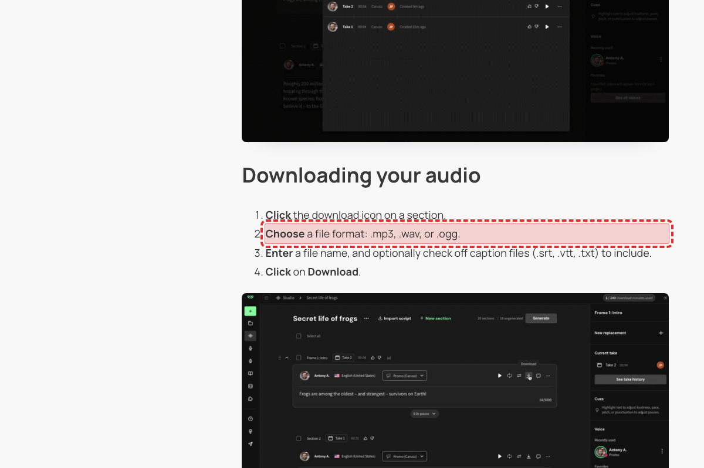
The pricing page's Export formats row now reads "MP3MP3MP3, TXTMP3, WAV, OGG, TXTMP3, WAV, OGG, TXT" across Trial, Starter, Pro, Business and Enterprise — the Pro column changed from "MP3, WAV, OGG, TXT" to "MP3, TXT" after the July 26 scan. This guide, rewritten on 2026-07-25, still says "Choose a file format: .mp3, .wav, or .ogg." with no plan condition, and Downloading Sections and Projects says "MP3 is available on all plans. OGG and WAV require a Business or Enterprise plan." A Pro subscriber following the getting-started steps will look for a .wav option that their plan no longer offers.
The "Supported languages & accents" list offers a New Zealand English accent that WellSaid doesn't have, and leaves out two it does
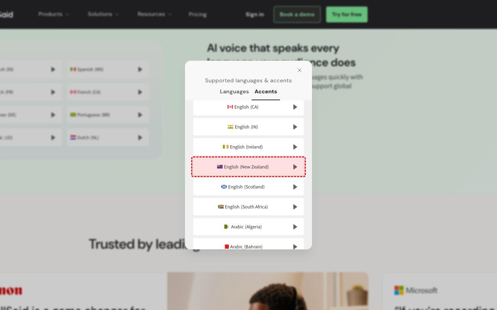
The "Supported languages & accents" list appears on fifteen marketing pages, including the homepage (open it with "View all languages", then the Accents tab), and every copy of it lists English (New Zealand). The Help Center's List of WellSaid Voices — which is organised by accent and names every voice — has no New Zealand section at all. The only New Zealand label anywhere on the site is a single voice card on /text-to-speech-api reading "Issa B. English (NZ)", and the homepage, /features/ai-voices, /ai-voice-use-cases/video-production and /free-ai-voice-generator all label that same voice "Issa B. English (ZA)", matching the Help Center's English (South Africa) section. In the other direction, the list omits English (Mexico) even though this page's own hero plays "Hannah A. English (MX)" and the Help Center has an English (Mexico) section with three voices, and it omits English (United Kingdom) despite UK voices being demonstrated on this page ("James B. English (UK)") and across the site. Someone shortlisting vendors for a New Zealand audience would choose WellSaid and find no voice to use, and someone who needs a UK or Mexican English voice may rule WellSaid out for lacking one it has.
- https://www.wellsaid.io/ai-voice-use-cases/corporate-communications
- https://www.wellsaid.io/
- https://www.wellsaid.io/features/ai-voices
- https://www.wellsaid.io/free-ai-voice-generator 2×
- https://www.wellsaid.io/industries/voice-ai-marketing
- https://www.wellsaid.io/ai-voice-use-cases/product-marketing
- https://www.wellsaid.io/ai-voice-use-cases/corporate-training
- https://www.wellsaid.io/ai-voice-use-cases/social-media-content
- https://www.wellsaid.io/ai-voice-use-cases/video-production
- https://www.wellsaid.io/ai-voice-use-cases/audiobooks
- https://www.wellsaid.io/ai-voice-use-cases/brand-campaigns
- https://www.wellsaid.io/ai-voice-use-cases/podcast-radio
- https://www.wellsaid.io/ai-voice-use-cases/paid-advertising
- https://www.wellsaid.io/ai-voice-use-cases/multilingual-training
- www.wellsaid.io/…/flight-operations-training-safety
- https://www.wellsaid.io/text-to-speech-api
The number of supported languages is given four different ways across the site — 17, 18, 30+ and 50+
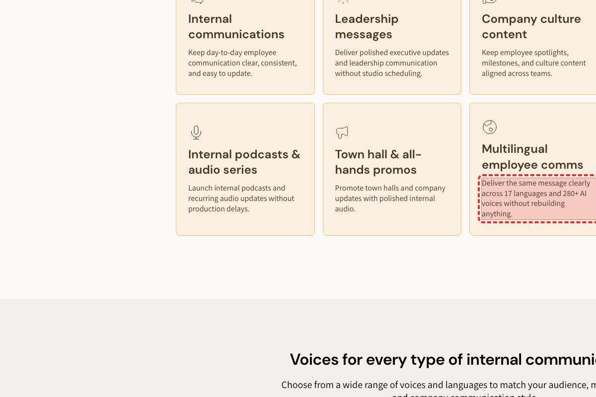
This page was updated this week. Its "Multilingual employee comms" tile reads "Deliver the same message clearly across 17 languages and 280+ AI voices without rebuilding anything", while the "Supported languages & accents" table on the same page lists 18 languages. Two other figures are in circulation: 30+ (on /industries/voice-ai-marketing and in the Help Center's List of WellSaid Voices) and 50+ ("Access 50+ languages including Spanish, French, Japanese, Korean, and more" on the homepage, "50+ languages & accents" on corporate-training and social-media-content). A communications lead checking whether their regional languages are covered gets 17, 18, 30+ or 50+ depending on the page. The voice-count half of the same sentence is covered separately by 'marketing-voice-count-inconsistency-120-240-280'.
- https://www.wellsaid.io/ai-voice-use-cases/corporate-communications
- https://www.wellsaid.io/industries/voice-ai-marketing
- help.wellsaid.io/…/39112914360467-List-of-WellSaid-Voices
- https://www.wellsaid.io/
- https://www.wellsaid.io/ai-voice-use-cases/corporate-training
- https://www.wellsaid.io/ai-voice-use-cases/social-media-content
Combining Sections calls 48 kHz "the highest supported sample rate" two lines after explaining what happens to 96 kHz files
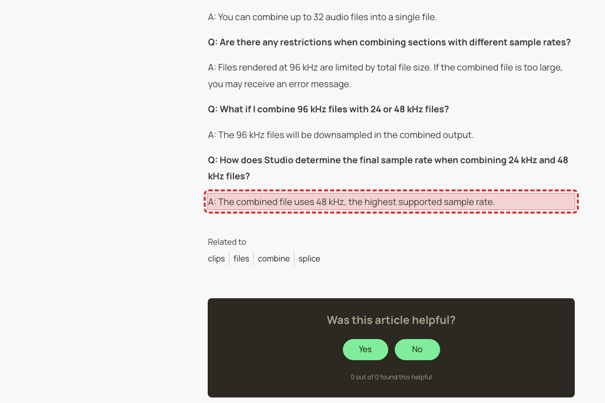
Two FAQs above this one on the same page deal with 96 kHz files: "Files rendered at 96 kHz are limited by total file size" and "The 96 kHz files will be downsampled in the combined output." The pricing page lists Enterprise sample rates as "24 kHz, 48 kHz, 96 kHz." An Enterprise customer reading this FAQ could reasonably conclude 96 kHz isn't offered. This line carried over unchanged when the article was renamed from Using the Combine Tool on August 1.
The permissions article tells admins that view-only members can revoke anyone's access — including the project owner's
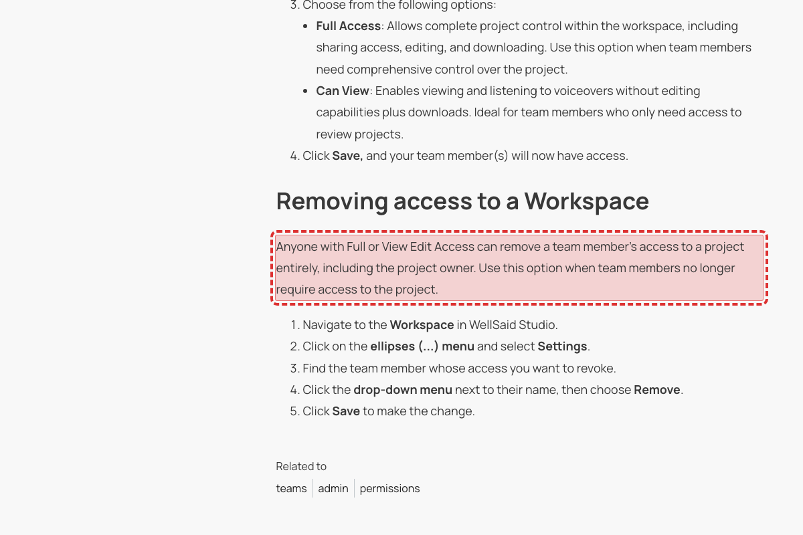
This article was rewritten on August 7. It defines Can View as "Enables viewing and listening to voiceovers without editing capabilities plus downloads. Ideal for team members who only need access to review projects" — then, two paragraphs later, tells readers that "Anyone with Full or View Edit Access can remove a team member's access to a project entirely, including the project owner." Read as written, a review-only member can lock the project owner out of their own work. It also invents two permission names the article never defines: the personal-file section says "Anyone with Full Edit Access", the Workspace section says "Full or View Edit Access", while the permission picker in both sections offers Full Access, Can Edit, and Can View. An admin setting up review access for stakeholders can't tell from this page what a Can View member is actually able to do.
API free-trial length is stated two different ways: the Help Center says 14 days, the product website says 7 days
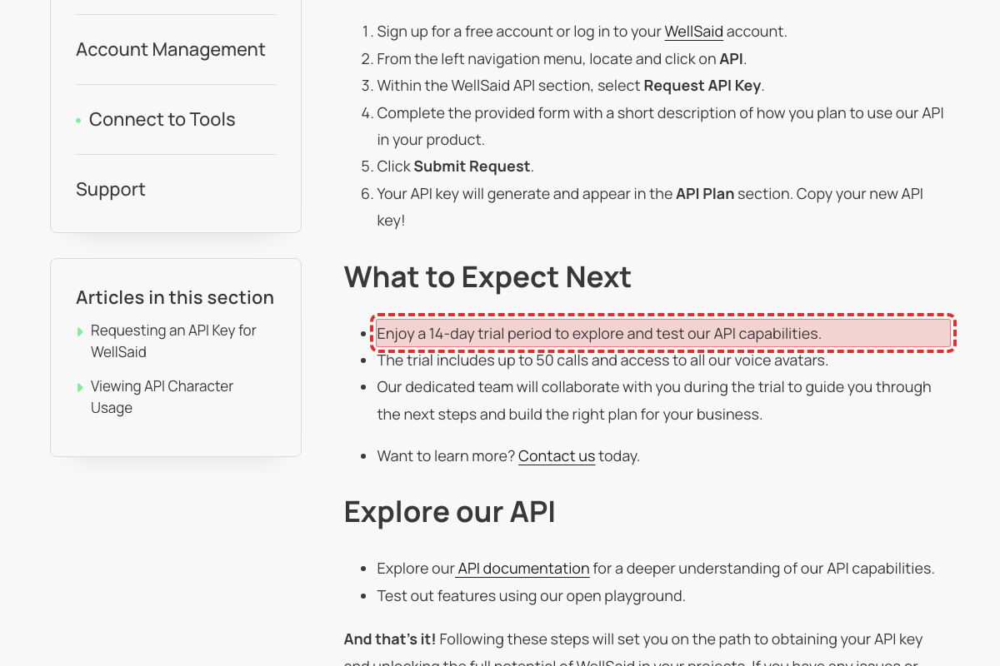
This Help Center article (updated June 29) says 'Enjoy a 14-day trial period to explore and test our API capabilities.' The public API page at wellsaid.io/text-to-speech-api says 'Signing up for an API trial is free and easy. You'll have 7 days to try out all of our features.' Both describe the same API trial, so a developer comparing the two can't tell whether it's 7 or 14 days.
Support article promises chat replies “within 1 hour”, but the pricing page says Business chat is a 4-hour SLA (only Enterprise/Priority is 1 hour)
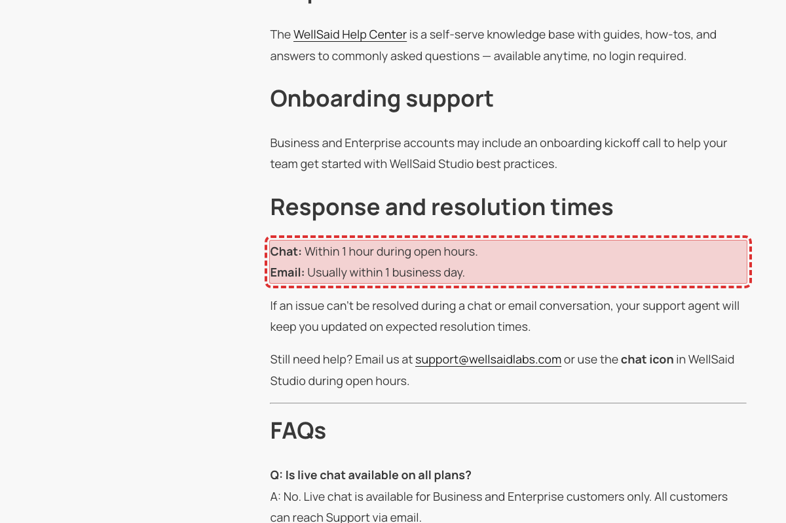
This Help Center article, edited on 2026-09-08, lists chat as available for Business and Enterprise customers and, under "Response and resolution times", states "Chat: Within 1 hour during open hours." The pricing page (https://www.wellsaid.io/ai-voice-pricing) instead promises Business "Email (1 business day SLA) and Live Chat (4 hour SLA during business hours)" and reserves the 1-hour figure for Enterprise: "Priority Chat (1 hour SLA during business hours)". A Business customer reading the support article expects a 1-hour chat reply that the pricing SLA doesn't guarantee.
New paragraph promises the free tier the full English voice library — the pricing page limits it to a curated selection
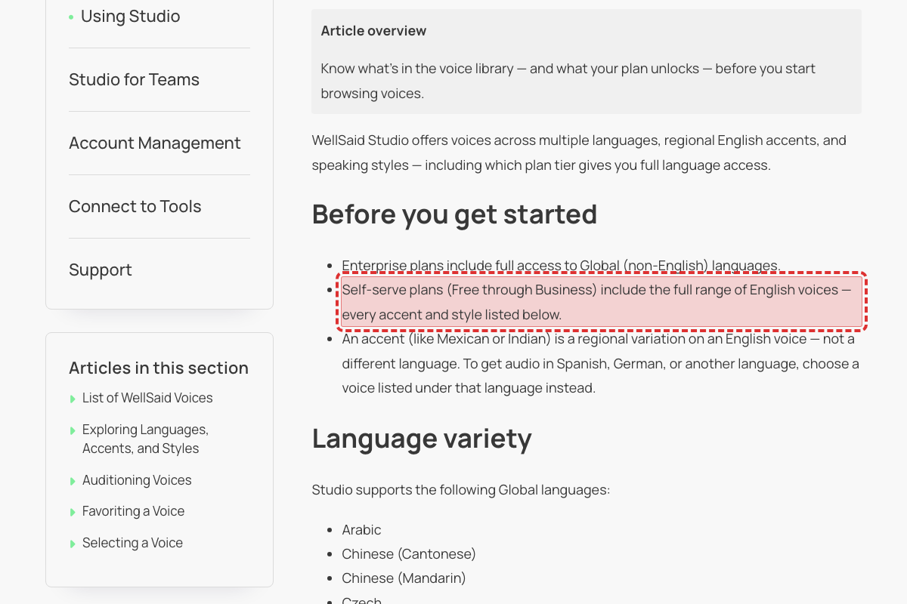
This paragraph was added to the article in its August 7 update. The pricing page describes the free tier as "3 download minutes per month (no commercial rights)" plus "Curated voice actors", and reserves "All English voices" for the Starter and Pro cards. So the one tier in the stated range that doesn't get the full English library is the one the sentence starts from. A prospect on the free plan reads this article, goes looking for a specific accent or style listed below it, and doesn't find it.
The Advertising page's integration callout names Adobe's video editor "Adobe Premier Pro"; the product is Adobe Premiere Pro
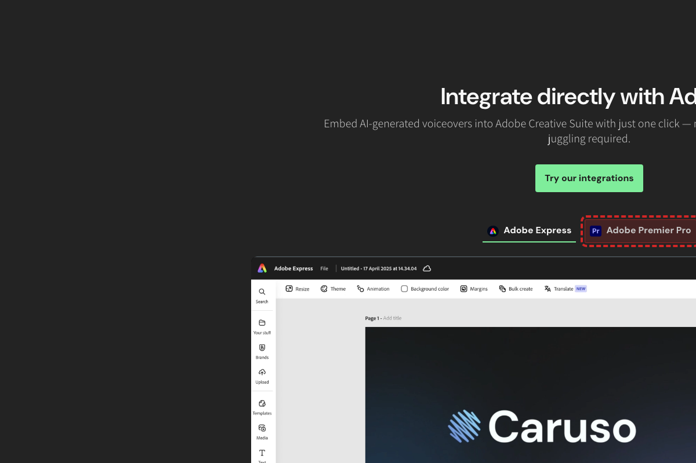
The Advertising page's "Try our integrations" callout reads "Adobe Express, Adobe Premier Pro", without the final "e" in Premiere. The Marketing page had the same typo and fixed it this week. The Help Center guide help.wellsaid.io/…/39177295482387-WellSaid-Voiceover-for-Adobe-Premiere-Pro spells it correctly.
'SEE ALL AVATARS' button -- current UI says 'see all voices'
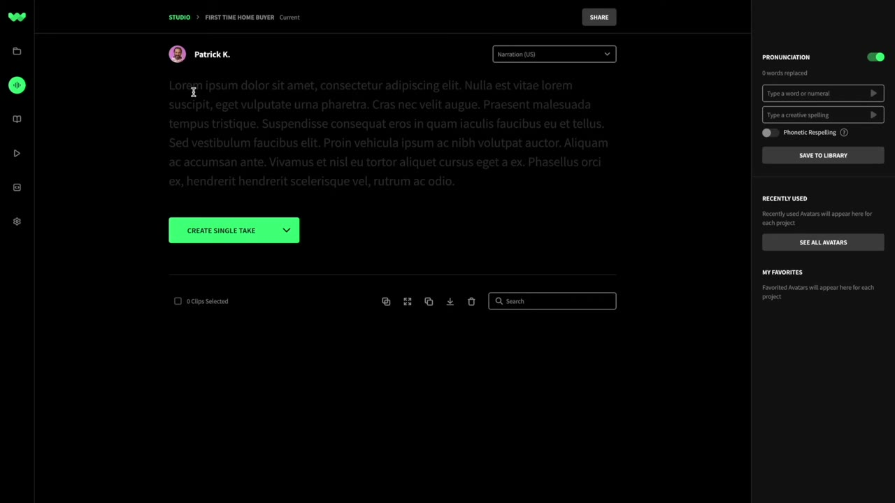
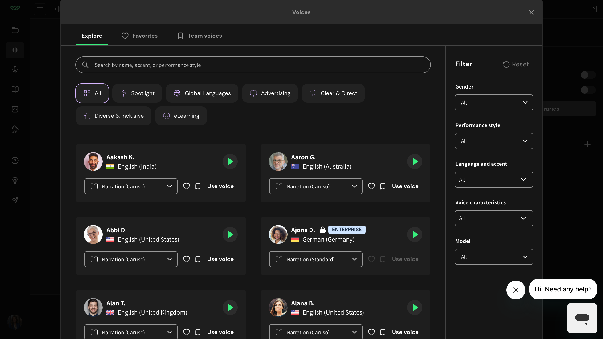
Current Studio UI labels the link 'see all voices' and the panel copy says 'voices' throughout — the word 'Avatars' no longer appears in the current Studio interface.
Corroborated by existing WellSaid Mode B audit: 'Article says See All Avatars -- live UI says see all voices'. Current-app capture confirms no 'Avatar' terminology anywhere in the voice picker or right rail.
Narration says 'voice avatar' -- product renamed to 'voices'
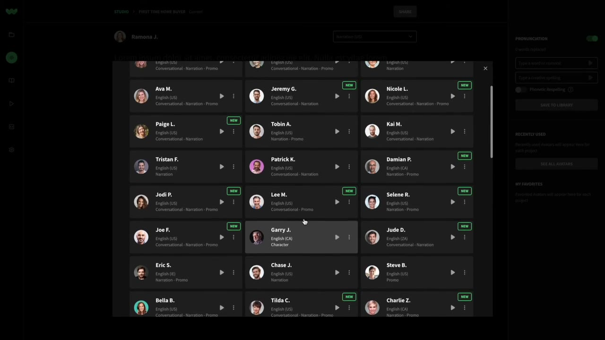
Re-record or caption: 'select the voice from our Voices panel'. In the current Studio, individual items are called 'voice cards' — the word 'avatar' no longer appears in the visible interface.
Mode B audit (2026-04) and current-app capture both confirm Studio no longer uses 'avatar' anywhere in visible UI. The voice-variant combobox's aria-label still reads 'Select avatar variant', but that text is only read by screen readers — sighted users never see 'avatar'.
'Current / Future BETA' version dropdown has been restructured
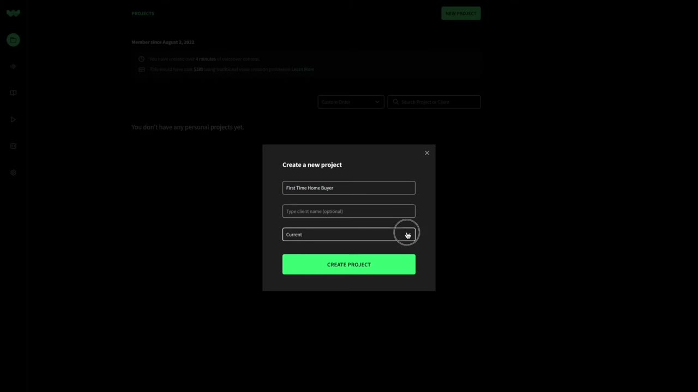

The narrator says 'select the current version of Studio' but the Current/Future BETA dropdown was replaced by three radio cards under 'Choose your Studio experience' — 'WellSaid Studio (recommended)', 'Legacy Studio - Standard', 'Legacy Studio - Global'. The 'current' option was demoted to 'Legacy Studio - Standard' (which is what this tutorial actually demonstrates). A viewer following along will not find a 'current version' selector.
Current-app capture: 'New project' modal shows three radio cards -- 'WellSaid Studio' (RECOMMENDED), 'Legacy Studio - Standard', 'Legacy Studio - Global' (with additional language dropdown).
Narration says 'voice library' -- panel renamed to 'Voices'
Re-record or caption: '...from our Voices panel...'. The voice selector dialog is now titled 'Voices' (confirmed in current-app capture).
Corroborated by an existing WellSaid finding: 'Article says Voice Library — the dialog is now titled Voices'.
'NEW PROJECT' button renamed to '+ New' + chooser menu

The button is now labeled '+ New' and clicking it opens a chooser menu with three items (Project / Folder / Workspace) before opening the modal. New users watching the tutorial will look for 'NEW PROJECT' and not find it.
Current-app capture of the projects home shows '+ New' button in the top-right; a second capture shows the popover menu with Project/Folder/Workspace options.
Right rail: 'PRONUNCIATION' section replaced by 'Replacements'
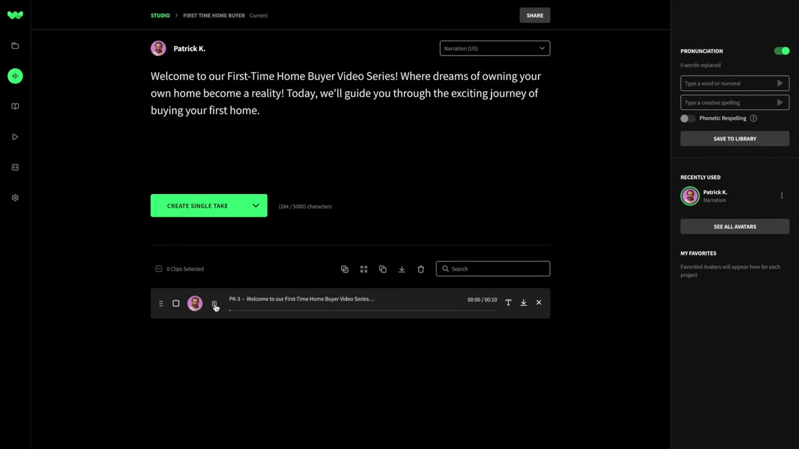

In the new Studio, the right rail no longer has the phonetic pronunciation form (Legacy Studio - Standard still shows a Voices section there). The current rail is titled 'Project > Replacements' with Personal/Team toggles, an 'Open libraries' button, and a 'New replacement' affordance. The pronunciation concept evolved into the broader Replacements + Libraries feature.
Current-app capture of the editor right rail.